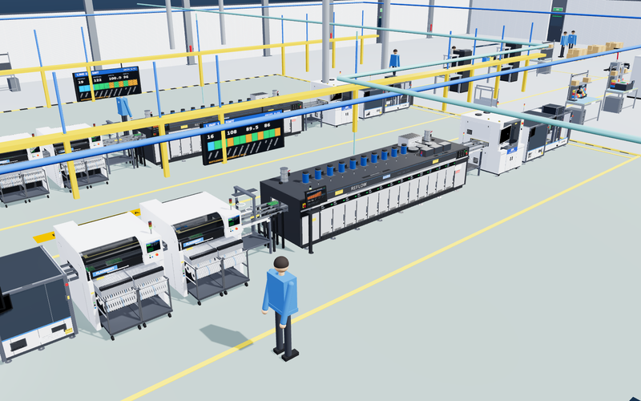

Factory plant — two SMT linesSTART HERE
A 72 × 42 m hall with two dual-lane lines (24 machines), component store, post-SMT, warehouse, utilities and offices. Live plant KPIs — output, first-pass yield, OEE, bottleneck — a state timeline per machine, a plant map, andon boards, AMRs and operators. Click any machine to inspect it, or walk the aisles with W A S D.